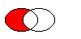

| Home · All Classes · Modules · QSS HELP · QSS 案例 · VER007 HOME |
该QRegion类指定一个画家的剪辑区域。More...
该QRegion类指定一个画家的剪辑区域。
QRegion一起使用QPainter.setClipRegion（ ），以限制油漆区，以什么需要上漆。还有一个QWidget.repaint（ ）函数，它接受一个QRegion参数。 QRegion对于减少屏幕区域由一个重绘更新量的最佳工具。
这个类是不适合于构建形状呈现，尤其是作为轮廓。使用QPainterPath创建路径和形状与使用QPainter。
QRegion是implicitly shared类。
一个区域可以由一个矩形，椭圆形，多边形或一个位图被创建。复杂区域可以通过结合简单的使用区域来创建united（ ）intersected（ ）subtracted（） ，或xored（） （异或） 。您可以使用移动区域translate（ ） 。
您可以测试是否一个区域isEmpty（） ，或者如果它contains（ ）一QPoint or QRect。该边框可以找到boundingRect（ ） 。
该功能rects（）给出的区域的分解成矩形。
使用复杂的区域的例子：
void MyWidget.paintEvent(QPaintEvent *) { QRegion r1(QRect(100, 100, 200, 80), // r1: elliptic region QRegion.Ellipse); QRegion r2(QRect(100, 120, 90, 30)); // r2: rectangular region QRegion r3 = r1.intersected(r2); // r3: intersection QPainter painter(this); painter.setClipRegion(r3); ... // paint clipped graphics }
在嵌入式Linux ， Windows CE和X11平台上，这个类的部分依靠以以下授权协议获得的代码：
版权所有（c ）1987 X联盟
特此免费授予的，对任何获得本软件副本及相关文档文件（ “软件” ） ，以处理本软件不受任何限制，包括但不限于使用权，复制，修改，合并，发布，分发，再许可和/或销售软件副本，并允许他人为之软体家具是这样做的，须符合下列条件：
上述版权声明和本许可声明应包含在所有的副本或实质性部分的软件。
本软件按“原样”，没有任何形式的担保，明示或默示的担保，包括但不限于适销性，适用于特定用途和非侵权的保证。在任何情况下X联盟承担任何索赔，损害赔偿或其他责任，无论是合同行为，侵权行为或其他原因所产生的，运出或与本软件或使用，或软件中的其他交易。
除本通知所载， X联盟的名称不得用于广告或其他方式来促进销售，使用或本软件中的其他交易未经X联盟事先书面授权。
版权所有1987年由数字设备公司，梅纳德，马萨诸塞。
保留所有权利
许可使用，复制，修改和分发本软件及其文档的任何目的免费特此授予，前提是上述版权声明出现在所有副本中，并且两种版权声明和本许可声明出现在支持文档，并且在广告或宣传有关软件分发没有具体的不能用数字的名称，事先书面许可。
DIGITAL声明不提供本软件有关，包括对适销性和适用性的所有默示保证，在任何情况下数字都不对任何特殊，间接或后果性损害或任何损害因无法使用，数据丢失或利润，无论是在动作的合同，疏忽或其它侵权行为，所产生的或与本软件的使用或性能。
指定区域的要创建的形状。
| Constant | Value | Description |
|---|---|---|
| QRegion.Rectangle | 0 | 该区域复盖了整个矩形。 |
| QRegion.Ellipse | 1 | 该区域是在矩形内的椭圆形。 |
构造一个空区域。
See also isEmpty（ ） 。
构造一个矩形或椭圆形区域。
If t is Rectangle的区域是填充矩形（x，y，w，h） 。如果t is Ellipse，该地区是充满椭圆与中心（x+w/ 2，y+h/ 2）和尺寸（w，h） 。
从点阵列构造一个多边形区域a由指定的填充规则fillRule。
If fillRule is Qt.WindingFill，多边形区域是使用捲绕算法中定义，如果是Qt.OddEvenFill，奇偶填充算法被使用。
Warning:这个构造函数可以用来创建复杂的地区使用时，将减缓画。
构造一个新的区域，它等于区域r。
从位图构造一个区域bm。
所得到的区域由以位图的像素的bm是Qt.color1，好像每个像素是一个1×1的矩形。
这个构造函数可以创建复杂的地区使用时，将减缓画。请注意，绘图蒙面像素映射可以做到更快使用QPixmap.setMask（ ） 。
这是一个重载函数。
创建基于rectange区域r与区域类型t。
如果矩形是无效的空区域将被创建。
See also QRegion.RegionType。
返回此区域的边界矩形。一个空的区域给出了一个矩形，它是QRect.isNull（ ） 。
如果该区域包含该点，则返回Truep否则返回False 。
这是一个重载函数。
如果该区域的矩形重叠，则返回Truer否则返回False 。
返回作为此区域的交集和地区r。

该图显示了两个椭圆区域的交界处。
这个函数中引入了Qt 4.2中。
See also subtracted（ ）united（）和xored（ ） 。
返回作为此区域的交集和给定的区域rect。
此功能被引入Qt的4.4 。
See also subtracted（ ）united（）和xored（ ） 。
如果这个区域相交，则返回Trueregion，否则返回False 。
这个函数中引入了Qt 4.2中。
如果这个区域相交，则返回Truerect，否则返回False 。
这个函数中引入了Qt 4.2中。
返回True如果该区域为空，否则返回False 。空白区是一个不包含任何点的区域中。
例如：
QRegion r1(10, 10, 20, 20); r1.isEmpty(); // false QRegion r3; r3.isEmpty(); // true QRegion r2(40, 40, 20, 20); r3 = r1.intersected(r2); // r3: intersection of r1 and r2 r3.isEmpty(); // true r3 = r1.united(r2); // r3: union of r1 and r2 r3.isEmpty(); // false
返回将在返回矩形数rects（ ） 。
此功能被引入Qt的4.6 。
返回非重叠的矩形组成区域的数组。
所有矩形的并集等于原来的区域。
See also setRects（ ） 。
返回其是区域r减去这一地区。

图中示出了结果，当在右侧的椭圆是从左侧的椭圆（减去left - right） 。
这个函数中引入了Qt 4.2中。
See also intersected（ ）united（）和xored（ ） 。
交换区other与这一地区。这个操作是非常快的，而且永远不会。
此功能被引入Qt的4.8 。
平移（移动）的区域dx沿X轴和dy沿着Y轴。
这是一个重载函数。
转译区point.x()沿x轴和point.y()沿着y轴，相对于当前位置。正值移动的区域向右和向下。
转换为给定的point。
返回区域的一个副本被翻译dx沿x轴和dy沿着y轴，相对于当前位置。正值移动的区域向右和向下。
这个函数是Qt 4.1中引入。
See also translate（ ） 。
这是一个重载函数。
返回regtion的副本翻译p.x()沿x轴和p.y()沿着y轴，相对于当前位置。正值移动矩形向右和向下。
这个函数是Qt 4.1中引入。
See also translate（ ） 。
返回作为此区域的和工会的区域r。

该图显示了两个椭圆区域的联合。
这个函数中引入了Qt 4.2中。
See also intersected（ ）subtracted（）和xored（ ） 。
返回作为此区域的和工会给定一个区域rect。
此功能被引入Qt的4.4 。
See also intersected（ ）subtracted（）和xored（ ） 。
返回作为此区域的异或（ XOR）和一个区r。
该图显示了专用的两个椭圆区域或。
这个函数中引入了Qt 4.2中。
See also intersected（ ）united（）和subtracted（ ） 。
| PyQt 4.10.3 for X11 | Copyright © Riverbank Computing Ltd and Nokia 2012 | Qt 4.8.5 |